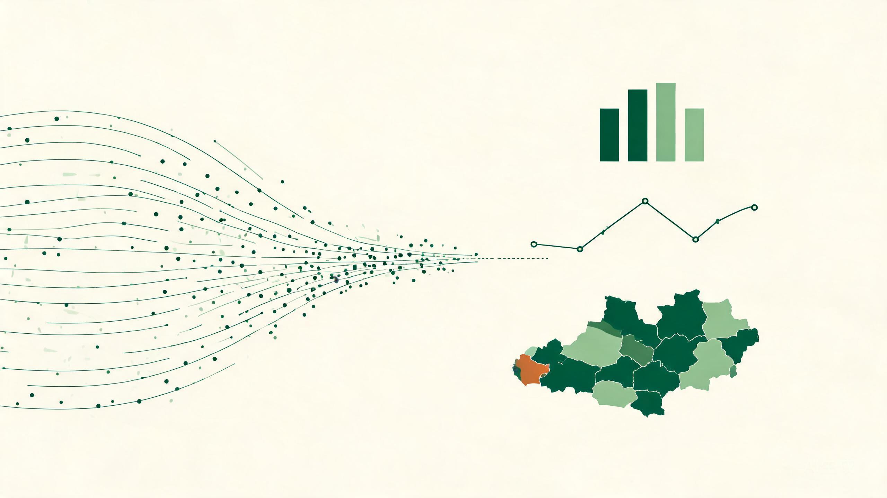

WORK 01
核心证据
志愿调研数据支撑平台
面向青协志愿服务的调研数据底座，含数据看板、满意度问卷与项目成效追踪三个子系统。
- 看板总览 6 项核心指标：问卷回收、在管项目、志愿者总数、累计服务时长、平均满意度、平均成效指数
- 设计"满意度"与"成效指数"两套指标，并对 6 个项目做横向对比与排序
- 配套满意度问卷与项目成效追踪页面，形成"采集 → 汇总 → 分析"闭环
数据能力作品集 · 2026
河南大学 · 思想政治教育专业 · 2026 级 | 目标岗位：数据分析与可视化
我不是"会用几个软件的人"，而是能把杂乱的数据变成能站住脚的结论的人。 下面这 8 个已上线作品，覆盖了从数据获取、指标设计、分析建模到可视化呈现的完整链路——全部由我独立完成。

01 / 核心主张
一个调查类课题的数据分析，真正的难点从来不是软件操作，而是四件事： 数据拿不到、概念算不出、方法讲不透、结论没人信。 我做的每一个作品，都在解决这四件事中的某一件。
02 / 能力 × 证据矩阵
| 能力层 | 证据作品 | 具体做了什么 |
|---|---|---|
| L1 数据获取与清洗 | 志愿调研数据支撑平台 · 三农智能官网 | 搭建"满意度问卷 → 回收 → 看板"的完整数据链路，把 6 个志愿项目的分散记录统一成同一套口径；在三农看板中实现把下乡调研的自然语言文字记录自动解析成结构化数值与分类。 |
| L2 指标体系设计 | 志愿平台成效指数 · 科创星火五维评估 | 为志愿项目设计"满意度"与"成效指数"两套可量化指标；在科创星火中把"项目好不好"拆解成创新性、可行性等 5 个可打分维度，让抽象评价变成可比较的分数。 |
| L3 分析与建模 | 科创星火 AI 评估引擎 · 新媒体评论复盘助手 | 多维加权打分并输出改进建议；对评论区文本做情感分析、痛点提炼；对志愿项目做横向对比，检验"投入时长"与"产出成效"之间是否存在线性关系。 |
| L4 可视化与叙事 | 志愿数据看板 · 三农调研看板 · 马理论概念图谱 | 设计总览指标卡 + 多图表联动的数据看板；实现柱状图 / 饼图的自动生成；用 AntV G6 把概念之间的引用与关联关系渲染成可交互的关系网络。 |
03 / 数据能力样本
下面两张图的数据，全部来自我搭建的 志愿调研数据支撑平台 [3]：6 个在管项目、124 名志愿者、累计 704 小时服务时长，平均满意度 4.5/5，平均成效指数 84 分。 我没有停在"展示数字"，而是让数字之间互相说话。
山区支教行动以 92 分居首，环保净滩活动 76 分垫底，极差 16 分——说明同类志愿项目的产出质量差异明显。
阳光义卖仅投入 16 小时却拿到 90 分，山区支教投入 360 小时拿到 92 分——投入规模与产出成效之间没有明显线性关系。
04 / 作品全览
核心证据 表示该作品直接体现数据获取 / 指标 / 分析 / 可视化能力； 支撑作品 表示体现信息架构、产品设计等配套能力。
面向青协志愿服务的调研数据底座，含数据看板、满意度问卷与项目成效追踪三个子系统。
整合"政策智能问答"与"调研数据可视化"两大 AI 能力的三农主题门户。
AI 驱动的校内科创孵化平台，把"项目好不好"变成可打分的五维评估。
面向 14 万粉丝团属新媒体矩阵的 AI 流水线，把选题、排版、评论复盘串成一体。
基于 RAG 的经典文献研读工具，把理论概念的关联关系可视化。
把科创项目从"找导师"到"打磨答辩"的全过程做成三个 AI 模块。
服务于心理委员与组宣委员岗位的工具型作品，含情绪自测与活动策划两条主线。
整合作品、经历、技能、证书与调研影像的个人数字阵地。
05 / 可迁移性
我关心的不是"我做过志愿数据"，而是"我做过的这套方法，换个对象还能不能跑"。 答案是可以——下面是一对一的对应关系。
| 我已经做过的事 | 迁移到绿色农产品可持续发展调研课题要做什么 |
|---|---|
| 为 6 个志愿项目设计成效指数并横向排序 | 构建绿色农产品消费调研指标体系，对不同人群、不同维度做量化打分与横向比较 |
| 设计满意度问卷并打通"回收 → 汇总"链路 | 设计消费者调研问卷，完成回收、清洗与信效度检验（Cronbach's α、KMO） |
| 把下乡调研的散乱文字记录解析成结构化数值并自动出图 | 把访谈记录、问卷开放题编码成指标底表，并沉淀为可复用的分析图表 |
| 把"项目好不好"拆成 5 个可打分维度并生成雷达图 | 把"购买意愿""消费信任"等抽象概念拆成可量表测量、可统计检验的具体题项 |
| 对评论区文本做情感分析与痛点提炼 | 对消费者开放回答与网络评价文本做分析，定位绿色农产品"叫好不叫座"的真实障碍 |
| 用 AntV G6 渲染概念之间的关联关系网络 | 可视化"认知 → 态度 → 信任 → 意愿"的传导路径与变量间的相关关系 |
| 搭建总览指标 + 多图表联动的数据看板 | 搭建调研数据看板，一屏看清不同人群在认知、态度、信任、意愿上的结构性差异 |
06 / 交付承诺